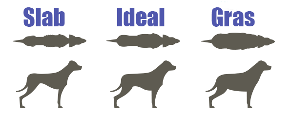

De ce contează hrana pentru câini |
Mâncarea este cel mai important factor din viața câinelui dvs. Prin dietă, el trebuie să obțină tot ce are nevoie corpul său: de la energia necesară pentru a continua să alerge dupa jucarii, până la gama incredibilă de substanțe nutritive care formează fiecare țesut și să mențină fiecare proces celular, totul trebuie livrat prin dieta sa. Prea mult sau prea puțin dintr-un singur nutrient poate provoca probleme și dacă ceva intră în dieta câinelui dvs. care nu ar trebui să fie acolo, puteți fi sigur că problemele nu vor fi departe. De la înțărcare până la bătrânețe, dieta este mai mult decât orice alt factor care va determina calitatea și durata vieții câinelui tău.
Ce să-ți hrănești câinele |
Întrebarea vesnica... cu ce ar trebui să-mi hrănesc câinele?
Din păcate, nu există un răspuns exact. Vă putem ajuta să alegeți alimentele cu cele mai bune ingrediente, dar niciun aliment nu se potrivește fiecărui câine. Câinii diferiți se descurcă mai bine în diferite diete, astfel încât alegerea unui aliment va presupune întotdeauna încercări și erori.
Acestea fiind spuse, citind etichetele hranei pentru animale de companie și știind ce să căutăm, găsirea mâncării potrivite poate fi mult mai ușoară și aici putem ajuta.
în primul rând, va trebui să alegeți din ce tipuri de alimente vi se potrivește cel mai bine dvs. și câinelui dvs. și există o mulțime de alegeri! Pentru un ghid cuprinzător cu privire la toate tipurile de alimente disponibile de la uscate la crude, complementare la complete, aruncați o privire la ghidul nostru.
După ce ați decis ce categorii de alimente preferați să le hrăniți, noi vă putem ajuta să găsiți cele mai bune soiuri din sutele disponibile.
Chiar și cu ajutorul nostru, tot ce putem face este să facem o presupunere cu privire la ce hrană este cel mai probabil în beneficiul câinelui tău. Toți câinii sunt diferiți și, deși unii câini vor înflori pe alimente aparent de calitate scăzută, alții ar putea avea dificultăți chiar și în dietele de cea mai înaltă calitate. Sănătatea câinelui dvs. ar trebui, prin urmare, să fie întotdeauna indicatorul final al adecvării unui aliment.
Hrănirea cantității potrivite este la fel de importantă ca hrănirea alimentelor potrivite. Toate alimentele pentru câini au îndrumări de hrănire pe ambalaj. Ar trebui să începeți întotdeauna urmând instrucțiunile pentru greutatea câinelui dvs. Veterinarul vă va putea spune greutatea câinelui sau puteți sta pe cântar în timp ce îl tineti in brate pentru a-l calcula acasă.

Odată ce câinele dvs. se stabileste pe o mâncare, urmăriți greutatea sa, deoarece acesta este cel mai simplu mod de a spune dacă cantitățile de hrănire sunt sau nu corecte. Comparați forma corpului câinelui dvs. cu câinii din imaginea de mai sus. Câinele tău este la greutatea sa ideală când poți simți, dar nu vezi cu ușurință, ultimele două sau trei coaste și când există o linie a taliei ușor identificabilă atunci când privești în jos de sus. Dacă câinele acumuleaza o greutate excesivă acesta devenind obez, vă rugăm sa va consultati cu medicul veterinar. Pe de altă parte, dacă câinele dvs. este prea subțire, încercați să măriți cantitățile de hrană cu 10% sau să treceți la o dietă mai bogată în calorii.
Ocazional, câinii hrăniți prea mult nu acumuleaza în greutate, ci în schimb dezvoltă probleme digestive sau alte probleme de sănătate. Dacă un câine este hrănit mult mai mult decât este necesar, corpul ar putea răspunde grăbind mâncarea sub formă de diaree care poate duce, în timp, la pierderea în greutate. Dacă câinele dvs. are probleme de sănătate, vă rugăm să consultați medicul veterinar.
Pentru majoritatea câinilor adulți sănătoși, programul de hrănire poate fi foarte flexibil. Odată ce ați stabilit o cantitate zilnică de hrănire, puteți să o împărțiți în câte mese doriți și să le hrăniți uneori pentru a vi se potrivi. Majoritatea proprietarilor de câini optează pentru 1-3 mese pe zi, dar datorită legăturii potențiale dintre balonare (o boală care poate pune viața în pericol, cunoscută și sub denumirea de dilatație gastrică-Volvulus sau torsiune gastrică) și mese simple, mari, un număr tot mai mare de medici veterinari recomandând împărțirea dietei zilnice de hrană în două sau mai multe mese mai mici, repartizate pe parcursul zilei. Deși orice rasă poate fi afectată de balonare, există o incidență mai mare la rasele cu pieptul adânc care sunt deosebit de expuși riscului, sunt recomandate mese multiple, mai mici.
Câinilor le place consistența, așa că, odată ce ați găsit un program care vi se potrivește dvs. și câinelui dvs., cel mai bine este să rămâneți cu el.
O alternativă populară la orele stricte de hrănire este hrănirea libera. Acesta este momentul în care mâncarea este lăsată în castron și câinelui i se permite să aleagă când și cât să mănânce. Deși hrănirea libera poate funcționa bine cu unii câini, este întotdeauna cel mai bine să măsurați cantitatea recomandată la începutul zilei și să completați vasul din aceasta. Odată ce a dispărut, a dispărut. Acest lucru este important pentru a evita hrănirea excesivă și, de asemenea, ajută la prevenirea agitației.
Există, totuși, unele excepții. De exemplu, dacă câinele dvs. se înfometează ușor, de obicei este mai bine să hrăniți mai multe mese mici pentru a vă asigura că stomacul nu este lăsat gol pentru perioade lungi de timp. Pentru câinii care uneori merg la toaletă în casă noaptea, este adesea util să rămânem la mesele de dimineață sau după-amiaza devreme pentru a ne asigura că mâncarea are timp să-și croiască drum înainte de culcare. Unele probleme de sănătate, cum ar fi diabetul, necesită, de asemenea, o analiză atentă a timpilor de hrănire.
Amestecarea diferitelor hrani |
Atâta timp cât puteți obține corect cantitățile, amestecarea diferitelor alimente poate fi o modalitate excelentă și ușoară de a crește varietatea și echilibrul dietei câinelui dvs. Deși filosofiile pot diferi între mărci, precum și procentele de proteine / grăsimi / fibre, cantitățile de micronutrienți din alimentele complete se conformează în general nivelurilor recomandate foarte asemănătoare (AAFCO în America, FEDIAF în Europa etc.), deci înlocuirea unui procent din cantitatea recomandată de unul completat cu același procent de altul va funcționa în general mai mult sau mai puțin la fel.
Lucrați cu procente, acest lucru se datorează faptului că densitățile nutritive ale diferitelor alimente pot varia foarte mult, iar acest lucru se reflectă în cantitățile de hrană recomandate de producători. Deci, rămâneți cu procente: 50% din cantitatea recomandată de alimente 1 cu 50% din cantitatea recomandată de alimente 2 sau 60:40, 70:30, 80:20 etc.
Vă rugăm să rețineți că unii câini au nevoie de timp pentru a se adapta la diferite alimente, de aceea este de obicei mai bine să amestecați alimentele împreună pentru fiecare masă, mai degrabă decât să le alternați.
Sistemul digestiv al unui câine are nevoie de timp pentru a se adapta complet la un nou aliment. Din acest motiv, vă recomandăm întotdeauna să introduceți un nou aliment pe parcursul mai multor zile pentru a face schimbarea cât mai lină posibil. Cea mai ușoară cale ar fi să hrănești 75% din vechea dietă cu 25% din cantitatea recomandată de hrană pentru noua hrană pentru o zi sau două, urmată de 1-2 zile la 50/50 și pentru ultimele două zile hrana 25 % din alimentele vechi, cu 75% din cele noi. O schimbare lentă este deosebit de importantă pentru câinii cu stomac sensibil, care ar putea fi necesar să fie schimbați pe o perioadă mai lungă.
Schimbarea între diferite soiuri din aceeași gamă se poate face mai rapid, deoarece multe dintre ingrediente vor fi aceleași, deși câinii sensibili ar putea fi necesari în continuare să fie schimbați treptat.
Diferitele alimente pot avea cantități de hrănire dramatic diferite, deci asigurați-vă că verificați ghidul de pe ambalajul noului aliment, deoarece atât hrana excesivă, cât și cea subalimentată pot duce la probleme de sănătate.
Depozitarea hranei cainelui |
Din momentul recoltării oricărui ingredient, nivelurile sale nutriționale încep să scadă, iar viteza cu care nutrienții se degradează depinde în totalitate de modul în care sunt depozitate alimentele. Pentru a profita la maximum de orice aliment, cel mai bine este un recipient etanș. Există o mulțime de opțiuni în tot felul de forme și dimensiuni disponibile în magazinele de animale de companie sau puteți utiliza pur și simplu un coș de gunoi normal sau alt container similar. Un container bun și robust vă va ajuta. Alimentele uscate trebuie păstrate într-un loc răcoros și uscat, în timp ce alimentele umede trebuie refrigerate după deschidere, iar alimentele congelate trebuie decongelate doar înainte de a fi hrănite.
|